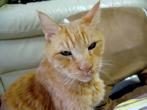

わたしの名はフレイ。
またの名を斉藤蒼志（あおし）。
猫です。
黒猫でなくてすみません。
（schwarzはドイツ語で「黒」）
本当は人間です。
写真はうちで飼っていた猫。
文章の仮想人格に
付けた名前はジェシカ。
文章では女の子ですが
実際は日本人の男です。
デザインの仕事を兼ねた勉強をしながら自称作家をやっています。
男です。年齢は30代前半。
彼女はいません。付き合ってくださる女性を募集しています。
ドッペルゲンガーのもうひとりの自分は「ヒルデ」と名付けました。
以下はキャラクターの紹介。
まずは大天使。それぞれ「絶対的能力・才能」を持っています。
| 大天使 | 説明 |
|---|---|
| ガブリエル | オタクでありながらひとり誰も知らない世界の片隅で この世界全員と戦った革命家の英雄。 |
| ミカエル | 神を信じて世界を救いながら大量に文章を書き続ける作家の詩人。 |
| ラファエル | デザイナー、学者、作家、大学生とたくさんの顔を持つ良識ある大人。 |
| ルシフェル | サタンであり、別名メフィストフェレス。 自らを神であると偽りながら、実際は悪魔の言葉を信じさせる。 |
| メタトロン | ミステリアスな天使であり、何ものなのかまだ分かっていない。 |
次に神々。神々は全知全能の力を持っています。
| 神々 | 説明 |
|---|---|
| ヴァルキリー | 宇宙全ての永遠を司る戦いと歴史の導きの女神。 誰一人殺さない理想を持ちながら星を作り変えるほどの力を持つ。 別名はマルス。 |
| フレイ | 最後まで達して全てを悟りきり、 知りたいものを自らの手で知った全知全能の女神。 聖書におけるキリスト。 |
| フレイヤ | この世界を自らの支配下においた、 中学二年生女子の大統領。 別名はヴィーナス。 |
| オーディン | 主神。人格者でありながら、 人々の運命だけを決めている。 実際はフレイがアースガルズの多くのことを行っているが、 フレイがあまりに自己中心的かつ勝手に行動するために 地位が維持されている。 |
| ユグドラシル | 世界の最初にあったとされる、 生命の故郷の星プロキオンに最初に生まれた、 脳と根っこだけを持った大樹。 |
次にキーパーソン。自分を支配しながら世界を支配する悪魔めいた人間たち。
| キーパーソン | 説明 |
|---|---|
| ジェシカ | ネットの仮想人格の女。 この世界のことを奴隷だと思っている。 |
| ヒルデ | 自らを支配するもうひとりの自分（ドッペルゲンガー）。 自分のことを奴隷だと思っている。 |
次にそれ以外のメインの登場人物。
| 主要キャラ | 説明 |
|---|---|
| シャーロット | 愛溢れる小学生の子供。 |
| セシル | 優等生の女子中学生。 |
| ソフィア | 不良少女。悪いことをしながら心は綺麗なまま。 |
| レナス | ひとりこの世界を支配する裏の女王。 |
| ステファニー | 文学少女。美しく感動できる詩を毎日のように書く。 |
| ヘレン | 精神的な障害を持ちながらも努力を続けるデザイナー少女。 |
| アリス | ものがたりの主人公。 馬鹿女でありながらこの世界における万物を創造した。 |
以下はサブキャラクター。
| サブキャラ | 説明 |
|---|---|
| クリームヒルト | いじめられて引き篭もりになったニキビ女だが、 天国でニキビのない美女に生まれ変わった。 |
| ジークフリート | 最強の屈強なる肉体を持った竜殺しの英雄。 天国でクリームヒルトの恋人になる。 |
| 神 | 神がなんであるかを、言葉で述べることはできない。 |
| エレン | 聖なる戦士ワルキューレの指導者。 ワルキューレは全員で9人。 車椅子となることを条件に究極魔法を獲得し、 「銀河団最強」の力を持つ。 |
| ローズ | 聖なる戦士ワルキューレのひとりで、エレンの恋人。 |
以下は悪人のキャラクター。
| 悪キャラ | 説明 |
|---|---|
| 大魔王ハネストラー | この世界を裏で支配する大魔王。 信じないものを全員地獄に突き落とす。 しかしながら、本人は「我々は正しいことをしている」と主張する。 革命組織「ハネストラーのしもべたち」を率いる。 口癖は「我々は最後のひとりになっても戦い続ける」。 |
| シャラハ | 革命組織「自由結束団」のリーダー。 悪魔ルシフェルとつるみながら、 この世界を自由にするテロ活動を行っている。 |